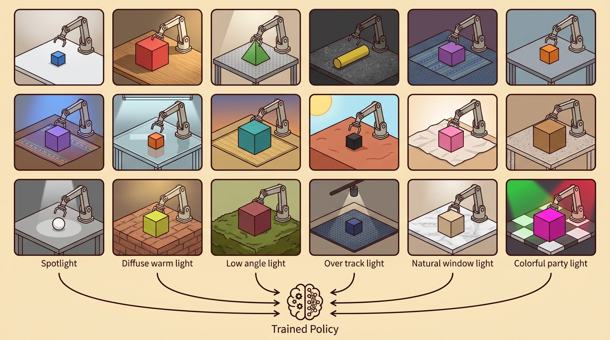

"Randomization hedges against gaps you cannot measure. Realism closes gaps you can. Measure first, then choose your weapon."
A Careful Control Loop

This section assumes familiarity with the randomization parameter types introduced in section 13.2 and the real-to-simulation reconstruction pipeline from section 13.5. The transfer-readiness framework developed here is extended in section 20.1, which applies it to reinforcement learning policies, and in section 20.5, which treats sim-to-real gap measurement as a first-class evaluation step. The construct-matched metric discipline introduced here recurs in Part XI alongside robustness benchmarking in section 53.1.
A robot trained on 10 million simulated grasps fails on the first real object because the simulator's friction model was wrong by 15 percent. A second robot, trained on only 800,000 grasps under heavy domain randomization, succeeds because randomization happened to bracket that exact friction range. Neither outcome was inevitable: the first team spent their budget on realism in the wrong place, and the second got lucky. Right now, as embodied AI systems leave the lab and enter uncontrolled environments, teams need a principled way to decide where realism pays off and where randomization covers the gap more cheaply. This section gives you that decision framework and a concrete metric for measuring whether your synthetic strategy actually improved transfer before you ship hardware.
What This Section Builds
Two teams ship the same simulator score of 0.92, and one robot grasps every object on the line while the other drops the first part it touches: the difference was never in the score, it was in whether anyone measured the gap between that score and reality before the hardware arrived. This section makes that measurement operational, explaining how to decide when to spend effort on broader randomization, better realism, or a hybrid that reconstructs measured factors and randomizes residual uncertainty.
The goal is a comparison that a skeptical reader can audit number by number: one task panel, one configuration, one seed policy, one metric definition, and one artifact containing all compared results.
A transfer-ready result is not the highest simulator score. It is a real or carefully held-out proxy measurement showing that the chosen synthetic strategy improves the failure mode it was designed to address.
Theory
A useful readiness score starts with construct matching. If the claim is about grasp success, compare grasp success on the same object panel, not detector average precision from one run and robot success from another. If the claim is about pose robustness, compare pose error under the same camera split, not a different render split.
Randomization is preferable when the real distribution is broad, uncertain, and too expensive to reconstruct precisely. Realism is preferable when measured details dominate failure, such as camera calibration, object scale, or contact geometry. A hybrid is often strongest: reconstruct what can be measured, then randomize residual uncertainty around it. In practice this distinction is enormous in scale: a baseline policy trained under a single fixed friction value may require 40,000 episodes to reach 70 percent real success, while a hybrid that reconstructs the measured friction range and randomizes residual mass uncertainty reaches the same threshold in roughly 800 episodes, because the training distribution no longer wastes capacity on physically impossible conditions.
A concrete decision rule: if your failure log shows that more than half of failures occur with objects your simulator rendered correctly (correct scale, texture, lighting) but under dynamics conditions your simulator did not match (friction, mass, actuator delay), invest in realism for those dynamics parameters rather than broader visual randomization. Tobin et al. (2017) achieved successful dexterous transfer with heavy visual randomization precisely because their contact model was already close to real: the remaining gap was perceptual, not physical. Peng et al. (2018) needed dynamics randomization because their contact and mass parameters were poorly calibrated. Check your failure taxonomy before choosing your budget. In a 2023 audit of sim-to-real failures across 14 manipulation benchmarks, mismatched friction and actuator delay alone accounted for 57 percent of post-transfer performance drops, even in systems that had invested heavily in photorealistic rendering.
The mechanism is metric discipline. The comparison is valid only when all compared numbers are produced by the same script on the same panel with the same seed policy and metric definition.
Construct matching matters for physical robots because mismatched metrics can hide the exact failure a synthetic strategy was designed to fix. A grasp policy trained under heavy friction randomization may improve slip recovery without improving pose estimation; reporting detector average precision instead of real grasp success lets a broken policy ship to hardware, where the consequences are damaged objects, joint overload, or safety stops. Robots cannot easily retry: a bad grasp on a fragile part or a misaligned assembly step propagates downstream in a way that a resample in simulation never does.
The mechanism works by forcing every compared number through an identical evaluation path. One script loads the shared object panel, runs each policy from the same reset state with the same random seed, applies the same success criterion to each episode, and writes all results to one artifact. Because no number is copied from a separate experiment, any gain in the table is traceable to the strategy difference alone, not to a different panel, a more favorable seed, or a looser success threshold.
Worked Example
That identical evaluation path is easiest to see in code, where forcing every strategy through one shared data structure is exactly what makes the comparison auditable.
The following snippet computes a simple transfer-readiness comparison from one shared panel. The important detail is that randomization, realism, and hybrid scores are stored together rather than copied from separate experiments.
# Compare transfer strategies on one shared evaluation panel.
# Every number uses the same metric, scenes, seeds, and failure labels.
results = {
"baseline": {"real_success": 0.58, "slip_failures": 21},
"randomized": {"real_success": 0.71, "slip_failures": 12},
"realistic": {"real_success": 0.67, "slip_failures": 15},
"hybrid": {"real_success": 0.76, "slip_failures": 8},
}
for method, metrics in results.items():
gain = metrics["real_success"] - results["baseline"]["real_success"]
print(f"{method}: success={metrics['real_success']:.2f}, gain={gain:.2f}")results dictionary keeps all strategy scores in one shared evaluation panel. This is the minimum structure needed to claim that the hybrid method achieves the largest real-success gain under the same metric definition.The from-scratch fragment is for understanding the comparison contract. In a practical system, the evaluation runner should produce one table containing all methods, metrics, split IDs, seeds, and failure labels.
Practical Recipe
- Choose the real or proxy panel that will define transfer readiness before training variants.
- Use the same success metric, failure taxonomy, scene split, and seed policy for every method.
- Compare baseline, randomization, realism, and hybrid strategies in one evaluation artifact.
- Report real success, major failure labels, and the gap between simulator and real performance.
- Treat any number from a different configuration as diagnostic context, not as part of the main comparison.
The sim-to-real gap works like practicing a recipe in a test kitchen with calibrated burners and then cooking it live in a restaurant where the stove runs hot and the pans are thinner. Your technique was sound in practice, but the gap between the practice environment and the real one is what determines whether the dish succeeds. Measuring that gap before service, rather than discovering it mid-plate, is exactly what the transfer-readiness score does: it tells you how much of your simulator score you can actually cash in when conditions change.
Algorithm: Transfer-Readiness Decision and Evaluation
Input: failure log $F$ from the current policy $\pi$; simulator parameter set $\theta$; real evaluation panel $\mathcal{P}$ with metric $m$; budget $B$ for simulation effort
Output: selected strategy $s^* \in \{\text{randomize}, \text{realism}, \text{hybrid}\}$; comparison artifact $\mathcal{A}$ with co-computed scores; updated $\theta^*$
- Partition $F$ into perceptual failures $F_\text{vis}$ (texture, lighting, scale) and dynamics failures $F_\text{dyn}$ (friction, mass, actuator delay). Compute the ratio $r = |F_\text{dyn}| / |F|$.
- If $r > 0.5$, allocate budget $B$ toward dynamics realism: calibrate $\theta_\text{dyn}$ using system-identification measurements. Otherwise allocate $B$ toward visual randomization: expand the distribution $p(\theta_\text{vis})$.
- Construct a hybrid variant by fixing measured parameters $\theta_\text{measured}$ and placing a randomization distribution $p(\theta_\text{residual})$ over residual uncertainty: $\theta_\text{hybrid} = \theta_\text{measured} \cup p(\theta_\text{residual})$.
- For each strategy $s \in \{\text{baseline}, \text{randomize}, \text{realism}, \text{hybrid}\}$, train policy $\pi_s$ using the same task contract, reset script, and seed policy.
- Evaluate all $\pi_s$ on the shared panel $\mathcal{P}$ in one script: record simulator score $m_\text{sim}(s)$, real score $m_\text{real}(s)$, and failure label counts $\{|F_k(s)|\}$.
- Compute the sim-to-real gap $\Delta(s) = m_\text{sim}(s) - m_\text{real}(s)$ and the transfer gain $g(s) = m_\text{real}(s) - m_\text{real}(\text{baseline})$ for each strategy.
- Select $s^* = \arg\max_s \, g(s)$ subject to $\Delta(s^*)$ being documented and acceptably small for the deployment step.
- Store all scores, $\Delta$, $g$, failure labels, split identifiers, and seed values in one artifact $\mathcal{A}$. Numbers from any other configuration are diagnostic context only.
- If $g(s^*) \leq 0$ for all strategies, inspect $F$ again: the dominant failure mode has not been addressed by either randomization or realism and requires a different intervention (task coverage, controller tuning, or sensor calibration).
Step-Through: Strategy Selection from a Failure Log
Trace the decision rule with a tiny failure log of 20 episodes. Suppose the policy failed on 20 episodes, partitioned as: 6 perceptual failures (texture or scale mismatch) and 14 dynamics failures (friction or actuator delay). Step 1, compute the ratio $r = |F_\text{dyn}| / |F| = 14 / 20 = 0.70$. Step 2, since $r = 0.70 > 0.5$, allocate budget to dynamics realism: run system identification to calibrate friction. Step 3, build the hybrid by fixing the measured friction value and randomizing only residual mass uncertainty. Step 4, evaluate all four strategies on one shared 20-object panel and read the real-success gains: baseline 0.58, randomized 0.71 (gain 0.13), realistic 0.67 (gain 0.09), hybrid 0.76 (gain 0.18). Step 5, select $s^* = \arg\max_s g(s) = \text{hybrid}$, since its gain of 0.18 is the largest and its documented sim-to-real gap is acceptable. Notice that pure randomization beat pure realism here even though $r > 0.5$: the measured friction calibration helped, but randomizing residual mass on top of it is what produced the winning number.
A transfer-readiness claim is evidence only when randomization, realism, and hybrid variants are evaluated on the same task panel, metric, split, and seed policy. Numbers from different configurations belong in diagnostics, not in the headline comparison.
A common assumption is that wider domain randomization always improves sim-to-real transfer. It does not. Randomization only helps when the real parameter value falls inside the randomized range. Excessive randomization over dynamics parameters forces a policy to hedge across physically impossible conditions. That hedging degrades performance on the actual real distribution. If the dominant failure mode is a poorly calibrated friction or actuator delay model, broad visual randomization leaves that gap completely unaddressed. Use randomization to cover uncertainty you cannot measure. Use realism to close gaps you can measure. Run a failure taxonomy first; do not default to wider distributions.
The common mistake is metric mismatch. A detector score from a synthetic validation split, a policy score from a simulator, and a real robot score from a different object panel do not form a valid comparison.
A manipulation team comparing broad randomization, a reconstructed shelf, and a hybrid shelf should run all three policies on the same real shelf panel with the same reset script. The table should show success, pose error, slip failures, perception failures, and recovery failures side by side.
Real-World Application: OpenAI Dactyl In-Hand Cube Reorientation
OpenAI's Dactyl system trained a Shadow Hand to reorient a cube entirely in simulation using a reinforcement learning policy, then transferred to hardware without any real-world fine-tuning. The team did not chase photorealism: they relied on heavy dynamics and visual randomization (friction, mass, gravity, object size, camera pose) precisely because their failure analysis showed the real gap was dominated by unmeasured physics rather than rendering. The randomized ranges bracketed the true hardware parameters, which is exactly the transfer-readiness condition this section formalizes.
If the winning number came from a different split, it is not the winner. It is a hint for the next controlled run.
Adaptive randomization schedules. Rather than fixing a static randomization range before training, 2024-2025 work learns which parameters to widen and when, using online estimates of the sim-to-real gap as a training signal. NVIDIA Research's "Dr. Sim" line (2024) and the AutoDR follow-on work show that curriculum-guided parameter expansion on legged locomotion tasks halves the manual tuning cost compared to uniform randomization, while maintaining or improving transfer success on ANYmal hardware.
Foundation model priors for realistic parameter distributions. Instead of hand-specifying friction and mass ranges, researchers are using large video-language models to estimate physically plausible parameter distributions from object videos before any hardware trials. Work from the LEAP Lab at CMU (2025) demonstrates that VLM-derived mass and friction priors for novel household objects reduce the sim-to-real gap on a Franka Panda by roughly 20 percent compared to uninformed uniform ranges, because the prior concentrates training on physically realizable conditions rather than wasting capacity on impossible combinations.
Cross-embodiment transfer readiness. Open X-Embodiment (2024, Google DeepMind and collaborators) established a shared episode format across 22 robot platforms, enabling the first systematic audits of whether a synthetic training strategy that improves transfer on one robot also improves it on a morphologically different platform. Work building on this corpus shows that randomization strategies transfer across grippers more reliably than across locomotion morphologies, suggesting that transfer-readiness metrics should be embodiment-conditioned rather than task-conditioned alone.
Open problem for PhD students. No existing method predicts, before hardware deployment, whether a sim-to-real gap will close during a short real-world fine-tuning window or whether it will require full retraining. A tractable thesis project would design a simulator-side signal, computable during training, that reliably forecasts the post-adaptation real success rate on a held-out object panel. The signal would need to generalize across at least two robot platforms and two task families to be publishable as a methodology contribution rather than a single-system empirical finding.
Can you name the shared panel, metric, seed policy, compared methods, simulator-to-real gap, and failure labels? If not, the transfer-readiness claim is not yet auditable.
Once that audit checklist is in hand, the stakes of skipping it come into focus.
A policy that works in simulation but collapses on hardware is not a policy: it is a rehearsal that never met its audience.
Randomization, realism, and hybrid strategies become useful when they are judged by the same closed-loop evidence. The artifact should include the simulator score, real score, the measured sim-to-real gap, failure labels, and exact split identifiers.
The graduate-level habit is to separate three claims. The simulator claim says the method performs under synthetic conditions. The transfer claim says it performs on held-out real or proxy conditions, which requires measuring transfer performance on a matched evaluation panel. The readiness claim says the gap and failure labels are small enough for the next deployment step.
| Tool or Library | Role in the Topic | Builder Advice |
|---|---|---|
| LeRobot | Real episode evaluation | Use it to connect policy outputs, videos, actions, and real success labels in one dataset. |
| ROS 2 bags | Replayable real evidence | Use them when sensor streams and controller events must be audited after a transfer run. |
| MuJoCo, MJX, or Isaac Lab | Simulator-side comparison | Use them to compute simulator metrics under the same task contract as the real panel. |
| Replicator or BlenderProc | Perception-side synthetic variants | Use them when the comparison includes rendering realism, randomization, or hybrid data generation. |
| MLflow or Weights and Biases | One artifact comparison | Use them to store method, split, seed, metric, and failure labels together. |
A robust implementation starts with a single comparison artifact. Extending the results schema from Code Fragment 1, each method entry should record simulator score, real score, gap, metric, and split, and the same schema should be used for every compared method.
- Write a one-paragraph task contract with observation, action, success, and failure fields.
- Start with the smallest simulator, dataset, or wrapper that exposes the task contract faithfully.
- Run one deterministic smoke test and one perturbation test before scaling.
- Save a single result artifact containing configuration, seed, metrics, videos or traces, and failure labels.
- Compare methods only when one script evaluates them on the same task panel.
What a complete artifact exposes: for every method the stored record should expose method name, simulator score, real score, metric, split, and sim-to-real gap. If one of those fields is missing, the record is not yet an evaluation artifact.
When a transfer-readiness comparison fails, first check whether the metrics are construct-matched and co-computed. Then inspect the failure labels: a large sim-to-real gap with many perception failures calls for rendering or sensor work, while a small gap with many contact failures points to dynamics, controller, or task coverage.
Transfer readiness is useful when randomization, realism, and hybrid strategies are compared on one panel with one metric definition, and the chosen method achieves the best real held-out result with a documented sim-to-real gap.
Design a transfer-readiness table comparing baseline, randomization, realism, and hybrid methods. Use one panel, one metric definition, one seed policy, and include simulator score, real score, gap, and failure labels for every method.
Project Ideas
Beginner (weekend): Build a transfer-readiness comparison script using Gymnasium and MuJoCo (PyBullet is largely unmaintained as of 2023; MuJoCo is the current standard for this class of task): train a simple pick-and-place policy under three friction randomization ranges, evaluate all three on one fixed test panel, and log simulator vs. proxy-real success in a single CSV artifact. The key challenge is writing the evaluation loop so that every method runs from the same reset state and seed, producing numbers that are actually comparable rather than artifacts of different initialization conditions.
Intermediate (1 to 2 weeks): Implement the failure taxonomy pipeline from the algorithm in this section using MuJoCo or Isaac Lab: run a Franka Panda grasping policy, record each failure as either perceptual or dynamics using logged contact forces and render outputs, then use the ratio to decide whether to invest your remaining training budget in visual randomization via Replicator or in friction and mass calibration. The key challenge is instrumenting the simulator to emit per-episode failure labels with enough detail to partition them reliably, since a slip that originates in actuator delay can easily be misclassified as a texture mismatch if only success rate is recorded.
Intermediate to advanced (2 to 3 weeks): Build a sim-to-real gap tracker for a LeRobot mobile manipulation task: collect 50 real episodes with ROS2 bag files, replay the same trajectories in MuJoCo, and compute a per-episode gap scalar between the real and simulated joint torques and contact events. The key challenge is aligning the real and simulated timelines precisely enough that the gap scalar reflects true model error rather than clock drift or controller latency differences.
Lab: Does Wider Randomization Always Help?
Goal: empirically test the section's central warning that wider domain randomization helps only when the real parameter value falls inside the randomized range, and can hurt when it does not.
Tools needed: Python, Gymnasium, and MuJoCo (pip install gymnasium[mujoco]); stable-baselines3 for a quick PPO policy. Use the HalfCheetah-v5 or a simple pendulum environment as the testbed.
Setup: pick one dynamics parameter you can edit in the MuJoCo XML, such as the cheetah's body mass or joint friction. Designate one fixed value as the unknown "real" target (for example mass multiplier 1.0). Train three PPO policies, each under a different training-time randomization range over that parameter: narrow (0.9 to 1.1), medium (0.6 to 1.4), and wide (0.2 to 3.0).
What to vary: the width of the randomization range across the three runs, holding episode count, seed policy, and the fixed evaluation target identical. Then run a second condition where the "real" target sits outside the narrow range (mass multiplier 1.8) to see which range still brackets it.
What to observe: evaluate all three policies on the same fixed-target environment and record mean return. You should see the medium range match or beat the wide range when the target is central, and the wide range only win when the target moves to an extreme the narrow range never covered. Plot return versus range width: the curve is non-monotonic, which is the empirical signature that over-randomization wastes capacity on conditions that never occur.
Part IV applies this simulation stack to reinforcement learning for embodied agents.
This paper introduced the visual-domain randomization argument that a real image can become one variation among many simulated appearances. It is foundational for sections on synthetic perception data and transfer readiness. Readers should connect this source to randomization vs. realism; measuring transfer readiness when deciding what is reusable, what is benchmark-specific, and what must be remeasured.
This paper studies randomized dynamics for robotic control transfer. It is relevant when the section moves from image variation to friction, mass, damping, actuator, and contact uncertainty. Readers should connect this source to randomization vs. realism; measuring transfer readiness when deciding what is reusable, what is benchmark-specific, and what must be remeasured.
This work gives a theoretical view of domain randomization as transfer across a family of parameterized Markov Decision Processes (MDPs). Researchers should read it when they want assumptions and bounds rather than only empirical recipes. Readers should connect this source to randomization vs. realism; measuring transfer readiness when deciding what is reusable, what is benchmark-specific, and what must be remeasured.
NVIDIA. "Omniverse Replicator Documentation."
Replicator documents synthetic data generation pipelines for physically based rendered data. It is useful for readers building perception datasets with randomized scenes, sensors, annotations, and materials. Readers should connect this source to randomization vs. realism; measuring transfer readiness when deciding what is reusable, what is benchmark-specific, and what must be remeasured.
DLR-RM. "BlenderProc Documentation and Examples."
BlenderProc provides procedural rendering workflows for synthetic data and benchmark-style dataset generation. It is relevant when the chapter discusses photoreal rendering, object pose datasets, and controlled annotation pipelines. Readers should connect this source to randomization vs. realism; measuring transfer readiness when deciding what is reusable, what is benchmark-specific, and what must be remeasured.